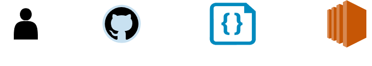
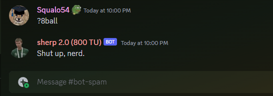

The Simple DevOps Infrastructure behind Sherp2.0
Overview
Imagine a vision where an open-source, community-driven Discord bot becomes the go-to companion for university students, embodying the principles of simplicity and cost-effectiveness.
This was exactly my vision when I first came up with the idea for Sherp2.0, I knew that the DevOps infrastructure supporting Sherp2.0 had to mirror these very ideals.
In this blog post, we embark on a journey through the intricacies of Sherp2.0's DevOps infrastructure. I'll unveil the decisions I made, the challenges I encountered, and the tools I used to solve them.
Join me as I shine a light on the behind-the-scenes magic that powers Sherp2.0 and discover how it's set to evolve and enhance the university experience for countless students.
Defining the Vision: Sherp2.0's Core Requirement
Sherp2.0 embarked on its journey with a singular mission: to ease the transition of university freshmen by providing quick access to answers to their frequently asked questions.
Picture this: a bewildered freshman, grappling with the maze of university life, desperately seeking answers. This scenario was our driving force.
To excel in this endeavor, Sherp2.0 needed more than just a static repository of information. It required a living, breathing knowledge base—one that constantly evolved to cater to the changing needs of students.
But herein lay the challenge: How could we make it effortless for anyone to contribute their wisdom to this knowledge bank while ensuring the utmost accuracy and reliability?
Solving Our First Roadblock
The answer became quite clear to me: GitHub! I established a public repository for the bot and utilized a JSON file to store information.
Students could create GitHub Issues to track and discuss potential additions to the bot's knowledge base. This platform also enabled them to engage in discussions regarding revisions to existing information.
Once all was said and done, they could submit a Pull Request, subject to scrutiny by more experienced students.
Employing GitHub as a collaborative platform for the bot perfectly aligns with the project's initial principles. Contributors could enhance the bot's knowledge base without the need to set up a development environment; all they had to do was contribute to a JSON file.
The project maintainers would then review and test the contributions before deploying the changes to production.
Best of all, this method is incredibly cost-effective; there's no need to spend a single dime on hosting your projects on GitHub.
The first folder structure for Sherp2.0 is shown below:
- root
- bot.py
- data
- 8ball.json
- commands.json
- contests.json
- copypasta.json
- ...Bringing Sherp2.0 to Life: Deployment Using AWS
Now that we have a platform for Sherp2.0 to have an ever-evolving and up to date knowledge base. It was time to go live with it so thousands of university students could take advantage of its features.
Remaining steadfast to our principles of simplicity and cost-effectiveness, I embarked on extensive research to find the perfect deployment solution. After careful consideration, the answer became clear: AWS EC2. AWS's generous free-tier offering, coupled with its user-friendly setup, made it an ideal choice.
While I acknowledge that this may not be a permanent solution due to expected growth in users and feature additions, for now, it functions seamlessly.
Piecing the Puzzle Together: GitHub Actions
We have our knowledge base hosted on GitHub and the bot deployed on an EC2 instance. But what happens when the knowledge base is updated? How will we get the deployed bot to use the updated knowledge?
Furthermore, the knowledge base is constantly updated so manually deploying the bot every single time would be tedious.
Well, let me introduce you to GitHub Actions; a CI/CD service provided by GitHub. It allows developers to build, test, and deploy your code as well as perform other tasks based on specific events or triggers.

The workflow used to deploy to EC2 instance that gets triggered when a commit happens in master branch:
name: Deploy code to EC2 instance
on:
push:
branches: [ master ]
pull_request:
branches: [ master ]
jobs:
deploy:
runs-on: ubuntu-latest
steps:
- name: Checkout code
uses: actions/checkout@v2
- name: Install SSH
run: sudo apt-get install -y ssh
- name: Copy code to EC2 instance
uses: appleboy/scp-action@master
with:
host: "<EC2_HOST>"
username: 'ubuntu'
key: ${{ secrets.PILOT_EC2_KEY }}
source: '.'
target: '/home/ubuntu/sherp2'
- name: Rebuild bot on EC2 instance
uses: appleboy/ssh-action@master
with:
host: "<EC2_HOST>"
username: 'ubuntu'
key: ${{ secrets.PILOT_EC2_KEY }}
script: |
cd /home/ubuntu/sherp2
export NVM_DIR=~/.nvm
source ~/.nvm/nvm.sh
npm install pm2
pm2 stop sherp2
pip install -r requirements.txt
pm2 start sherp2Conclusion
As we conclude this journey through the Sherp2.0 DevOps landscape, let it serve as an inspiration for your own projects. Simplicity and cost-effectiveness can help greatly to deliver quickly and iterate on the fly.
If you want to contribute to Sherp2.0 or you are interested in knowing what is in store for the future, you can find its repo here.
